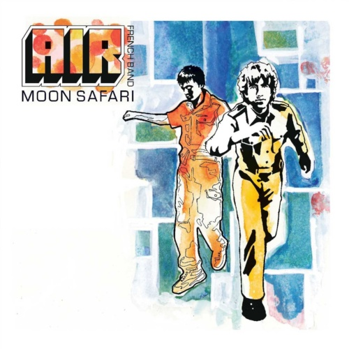

Reviews
Music Has the Right to Children
Boards of Canada
The Deconstruction
Eels

Moon Safari
Air
Can I Borrow a Feeling?
Kirk Van Houten
Boarding House Reach
Jack White
There's a Riot Going On
Yo La Tengo
American Utopia
David Byrne
Knowing What You Know Now
Marmozets
Kind of Blue
Miles Davis
Richard D. James Album
Aphex Twin
Little Dark Age
MGMT
This Nation's Saving Grace
The Fall
←
1
2
3
…
7
8
9
10
11
12
13
…
19
20
21
→
Sign up for monthly Audioxide roundups, if you like.